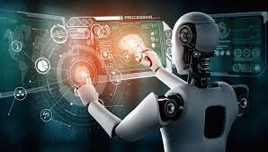

A tecnologia tem transformado a forma como vivemos, trabalhamos e nos comunicamos. Desde a invenção da roda até a era da informação, cada avanço tecnológico trouxe mudanças significativas para a sociedade.
Hoje, a internet é um dos pilares da tecnologia moderna, conectando bilhões de pessoas ao redor do mundo. Redes sociais, plataformas de streaming e comércio eletrônico moldaram nossas interações diárias. A comunicação tornou-se instantânea e global, permitindo que compartilhássemos ideias e culturas em tempo real.
Além disso, a inteligência artificial e a automação estão revolucionando setores como a saúde, a educação e a indústria. Ferramentas inteligentes ajudam médicos a diagnosticar doenças mais rapidamente e melhoram a eficiência de processos produtivos. No entanto, essa evolução também levanta questões éticas e desafios, como a proteção da privacidade e a substituição de empregos.
O futuro da tecnologia promete ainda mais inovações, como a realidade aumentada, a internet das coisas e avanços em biotecnologia. À medida que nos adaptamos a essas mudanças, é crucial encontrar um equilíbrio entre os benefícios e os riscos que a tecnologia traz. A forma como escolhemos utilizar esses recursos determinará o impacto que terão em nossas vidas e no mundo.
A tecnologia é uma ferramenta poderosa; seu uso responsável e ético será fundamental para garantir que suas contribuições sejam sempre positivas.